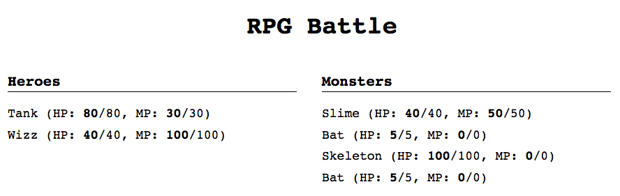
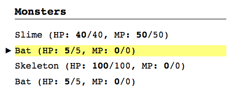
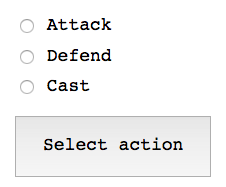
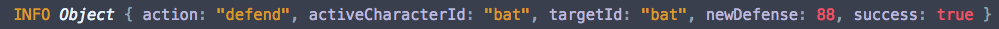
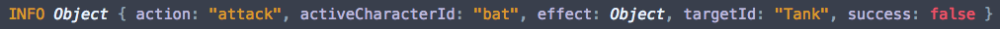
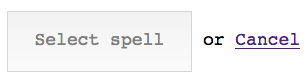
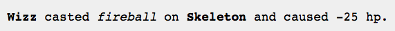
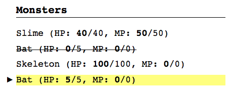
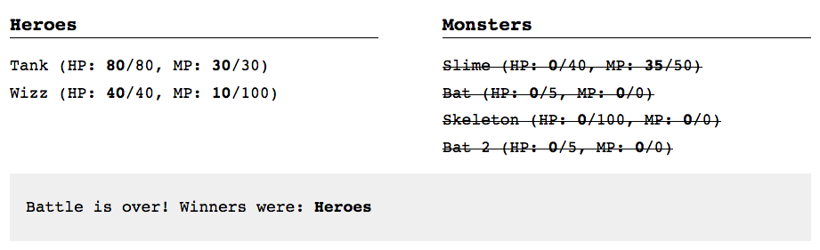

Guía
Nota: lee primero el enunciado de la práctica antes de leer este documento.
Esta es una guía paso a paso con sugerencias para afrontar la práctica. Es recomendable leer este documento entero –especialmente el apartado de Consideraciones– antes de ponerse a realizar el primer paso.
También es recomendable tener fresca en la cabeza la API de la práctica anterior de las batallas RPG con Node: repasa el enunciado de la práctica o su código fuente.
Durante el desarrollo de esta práctica, si te atascas sobre qué llamadas a la API hay que hacer, siempre puedes consultar el archivo index.js de la práctica anterior –donde hay programado un cliente de dicha API.
1. Mostrar los personajes
En el código HTML de base, hay dos listas <ul class="character-list"> que hay que rellenar con elementos <li>, uno por personaje. Debemos indicar el nombre del personaje junto con sus atributos de vida y maná. Más adelante nos será util poder referinos a ese personaje, así que es conveniente almacenar en un atributo data su ID de personaje.
<ul class="character-list">
<!-- ... -->
<li data-chara-id="bat 2">
bat (HP: <strong>5</strong>/5, MP: <strong>0</strong>/0)
</li>
</ul>
Aunque las listas <ul> están creadas en el archivo HTML, falta rellenar su contenido, lo cual se ha de hacer dinámicamente con JavaScript. Con Battle.prototype.characters.allFrom se puede acceder a las vistas (CharactersView) de los personajes de una party.
Como habrá que refrescar el contenido de estas listas, es recomendable implementar una función que haga esto, para poder llamarla más adelante desde otros sitios.
Por ahora, se puede comenzar con mostrar los personajes al inicio de cada turno. Para ello, hay que subscribirse al evento turn de Battle.

Documentación relacionada
Element.innerHTMLen la MDN.Document.querySelectoren la MDN
2. Mostrar el personaje seleccionado
El CSS está preparado para que un elemento con la clase active aparezca resaltado, indicando que es el turno de dicho personaje.
En el callback evento turn de Battle se nos pasa la información de cada turno. Uno de los datos del evento es la ID del personaje activo, con lo que podemos usar un querySelector para seleccionar el <li> de dicho personaje y añadir la clase active.

Documentación relacionada
Element.classListen la MDN- Using data attributes (guía en la MDN)
3. Mostrar el menú de acciones de batalla
Dentro de la sección <section class="battle-menu"> hay tres formularios, que aparecen ocultos gracias a un estilo display: none aplicado inline. Cada formulario representa una "fase" del menú de batalla, y presentará una lista de opciones al jugador.
Se puede obtener una lista de las opciones disponibles en un momento dado con el método list de Battle.prototype.options. Con dicha lista, se pueden generar una serie de radio buttons para que el jugador pueda elegir la opción deseada.
Esta lista de radio buttons tendrá el siguiente aspecto –pero se ha de generar dinámicamente con JavaScript:
<ul class="choices">
<li><label><input type="radio" name="option" value="attack"> attack</label></li>
<li><label><input type="radio" name="option" value="defend"> defend</label></li>
<li><label><input type="radio" name="option" value="cast"> cast</label></li>
</ul>
Hemos de generar esta lista dinámicamente dentro de las acciones a tomar cuando se dispare el evento turn de Battle. En este caso, la lista a generar es de las acciones que puede tomar un personaje, lo que se corresponde con el formulario con su atributo name a select-action.

4. Seleccionar una acción
Los radio buttons tienen un funcionamiento peculiar, puesto que comparten el atributo name. Esta es la manera que tiene el navegador de "agruparlos", de forma que sólo pueda estar activo un único radio button en un momento dado.
Se puede acceder fácilmente al valor (value) de un grupo de radio buttons a través del formulario al que pertenecen. Por ejemplo, para el menú de batalla hemos establecido un name para el grupo de "option". Suponiendo que su formulario está almacenado en la variable form, podríamos tener:
var action = form.elements['option'].value;
battle.options.select(action);
Obviamente hay que realizar esto cuando el jugador haya pulsado el botón de Select action. Para ello, hay que subscribirse al evento submit del formulario. Es imprescindible que además anulemos dicho evento con preventDefault para evitar que el navegador recargue la página.
Debemos además validar el formulario, para asegurarnos de que el jugador ha seleccionado una opción. HTML5 nos permite hacer validaciones sencillas con JavaScript en el lado del cliente. Para requerir un campo, debemos añadir el atributo required a dicho elemento. En el caso de un grupo de radio buttons, basta con añadir required a uno cualquiera:
<input type="radio" name="option" value="attack" required>
Para comprobar que este paso está hecho correctamente, puedes subscribirte al evento info de Battle e imprimir los datos de dicho evento. Con lo que hay hecho ahora debería funcionar la acción de Defend, puesto que no requiere ningún paso más.

Documentación relacionada
- HTML Forms Guide, una lista de artículos y tutoriales sobre formularios HTML5.
Event.preventDefaulten la MDNHTMLFormControlsCollectionen la MDN (para información sobreHTMLFormElement.elements)
5. Seleccionar un objetivo
Se hace de forma similar a seleccionar una acción: se ha de generar la lista de opciones dinámicamente con JavaScript, así como interceptar el evento submit de este formulario y llamar a battle.options.select con el objetivo seleccionado por el jugador.
Un añadido que tiene este formulario es un enlace que nos permite cancelar la acción actual. Para que funcione, hemos de interceptar el evento click de dicho enlace, usar preventDefault para que el navegador no haga nada, y llamar a battle.options.cancel.
Por supuesto, hay que controlar qué menú está visible cada momento. Esto lo podemos hacer cambiando su estilo CSS inline, a través de la propiedad display:
actionForm.style.display = 'none'; // oculta el formulario de acciones
targetForm.style.display = 'block'; // muestra el formulario de objetivos
Para comprobar que funciona, prueba a elegir atacar un objetivo en los menús y comprueba el mensaje que emite el evento info de Battle en la consola:

Como re-renderizamos los personajes de las parties en cada turno (cada vez que Battle emite turn), si el ataque ha tenido éxito, deberíamos ver cómo han disminuido sus puntos de vida.
Documentación relacionada
- Propiedad CSS
displayen la MDN
6. Seleccionar un hechizo
Esto es muy similar a seleccionar una acción o un objetivo. Hay que generar, de nuevo, la lista de opciones (en este caso, hechizos disponibles) dinámicamente, y ocultar / enseñar el menú que corresponda según el flujo.
Seleccionar un hechizo ocurre tras haber seleccionado la opción Cast en el menú de acciones, y una vez seleccinado el hechizo debemos mostrar el formulario de seleccionar un objetivo.
La particularidad de este menú es que puede ser que no haya ninguna opción disponible. En este caso, debemos desactivar el botón del formulario si la lista de opciones está vacía (y activarlo en caso contrario). Para ello, hay que usar la propiedad disabled del botón.

7. Panel de información
Hay que mostrar información al usuario sobre el resultado de una acción concreta: si el ataque tuvo éxito o no, cuanto daño causó, etc.

En el archivo HTML hay un párrafo con ID battle-info, cuyo contenido puedes modificar para mostrar estos mensajes de información de batalla.
Esta información de batalla la podemos obtener subscribiéndonos al evento info de Battle, que nos proporcionará los datos de qué personaje actuó, contra quién, si tuvo éxito, etc.
Para facilitar la tarea, se ha incluido una función llamada prettifyEffect, que devuelve una string "bonita" (en lugar de [Object object]) con los efectos aplicados en el ataque.
var effectsTxt = prettifyEffect(effect || {});
// ej: -> '-5 hp, +5 mp'
8. Marcar personajes como muertos
Ahora que los personajes pueden atacar, podemos mostrar cuándo uno ha muerto. La hoja de estilos CSS incluye una clase dead que, aplicada a un elemento, lo muestra como "muerto" (en este caso, tachado).

Para ello, se ha de modificar el código que se ha programado en el paso 1 para mostrar los personajes, de forma que cada elemento de la lista (<li>) tenga la clase dead si el personaje está muerto (los puntos de vida están a cero).
9. Final del juego
Hay que mostrar un mensaje en el panel de información que indique que el juego ha acabado y quién ha ganado. Además, hay que volver a mostrar los personajes para que se muestre el resultado final de la batalla (con una de las parties con todos los personajes muertos).
El juego se acaba cuando Battle emite el evento end, por lo que debemos implementar dicho código en un callback de este evento.

Consideraciones
Template strings
Las template strings (o template literals) son una característica de ES6, pero que ya está implementada en la mayoría de navegadores modernos. Pueden resultarte útiles en esta práctica, ya que soportan interpolación de expresiones y declaraciones multilinea.
En su manera más básica, se definen igual que una string normal, pero usando backticks `:
`Hello, world!`
Se pueden tener strings multilíneas sin necesidad de romper la cadena ni usar el operador de concatenación:
`Hello,
world!`
Para interpolar expresiones, debemos poner la expresión a interpolar entre los caracteres ${}:
var name = 'Darth Vader';
`Hello, ${name}`;
No sólo podemos utilizar variables, sino otro tipo de expresiones:
`Hello, ${name.toUpperCase()}, here's a calculation: ${2 + 2}`
Recordemos también que el operador ternario es también una expresión, y nos permite interpolar condiciones sencillas:
`Hello, you are ${life > 0 ? 'alive' : 'dead'}`;
Un ejemplo práctico que muestra la diferencia entre usar template strings y strings normales para generar código HTML a usar dentro de la propiedad innerHTML:
var list = document.querySelector('ul.shopping-list');
var data = {name: 'Banana', amount: 3, price: 0.5};
// template strings
list.innerHTML += `<li class="${data.amount > 0 ? 'bought' : ''}">
${data.name}, ${data.amount * data.price}€
</li>`;
// regular strings
list.innerHTML += '<li class="' + (data.amount > 0 ? 'bought' : '') + '">' +
data.name + ', ' + data.amount * data.price + '€' +
'</li>';
Documentación: Template strings en la MDN.
Atributos data
Las ID's de los personajes repetidos tienen un espacio en blanco (p.ej: bat 2). Para poder usar esto en un querySelector, se deben utilizar comillas:
document.querySelector('[data-chara-id="bat 2"]');
Para acceder a ese atributo data usando la propiedad dataset hay que tener en cuenta que los guiones se transforman en camel case. Así, si se usa como atributo data data-chara-id, se accedería a él de la siguiente manera:
var el = document.querySelector([data-chara-id="bat 2"]);
console.log(el.dataset.charaId); // imprimiría bat 2
Documentación: Using data attributes en la MDN.